Double Integrals in Polar Coordinates#
Polar Coordinates and Polar Rectangular Regions#
Polar Coordinates are simply another way to represent points on the plane. In rectangular coordinates we represent a point \((x, y)\) as moving down the x-axis by the amount x and then up the y-axis by the amount y. In polar coordinates we represent the point as \((r, \theta)\) and interpret it as moving down the x-axis (also called the polar axis) by \(r\) and rotating the point about the origin by the angle \(\theta\). The image below shows the two coordinate systems of the same point.
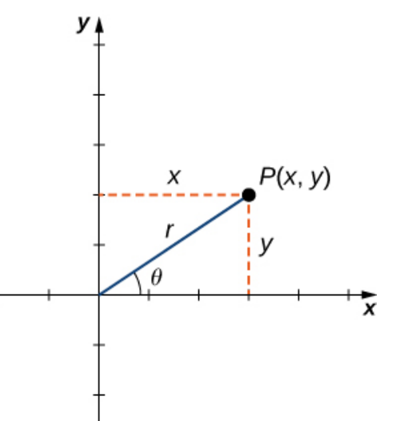
Polar Coordinate Definition#
A little trigonometry gives us the following conversions between rectangular and polar coordinates.
Theorem: Converting Points between Coordinate Systems
Given a point \(P\) in the plane with rectangular (Cartesian) coordinates \((x, y)\) and polar coordinates \((r, \theta)\), then,
Along with points in the polar coordinate system we can also plot curves, as they are simply a set of points. To plot a polar function of the form \(r = f(\theta)\) simply evaluate \(f\) at all points \(\theta\) in its domain and then plot the corresponding \((r, \theta)\) pairs. If we are doing this by hand we would use enough \(\theta\) values until we saw a pattern in the graph and then connect the points, just like in rectangular coordinates. Since we are using technology we can let the machine plot hundreds to thousands of points for us.
Note
One big difference between rectangular and polar coordinates is in uniqueness. In rectangular coordinates if we have \((a, b) = (c, d)\) then \(a = c\) and \(b = d\). This is not the case with polar coordinates, note that, for any polar coordinate point, \((r, \theta) = (r, \theta + 2 \pi k).\)
A polar coordinate rectangle is a domain of the form \(D = \{ (r, \theta) \; | \; a \leq r \leq b, \alpha \leq \theta \leq \beta \}\) and we usually assume that \(0 \leq \beta - \alpha \leq 2\pi.\) For example, the circle of radius 3 is \(D = \{ (r, \theta) \; | \; 0 \leq r \leq 3, 0 \leq \theta \leq 2 \pi \}.\)
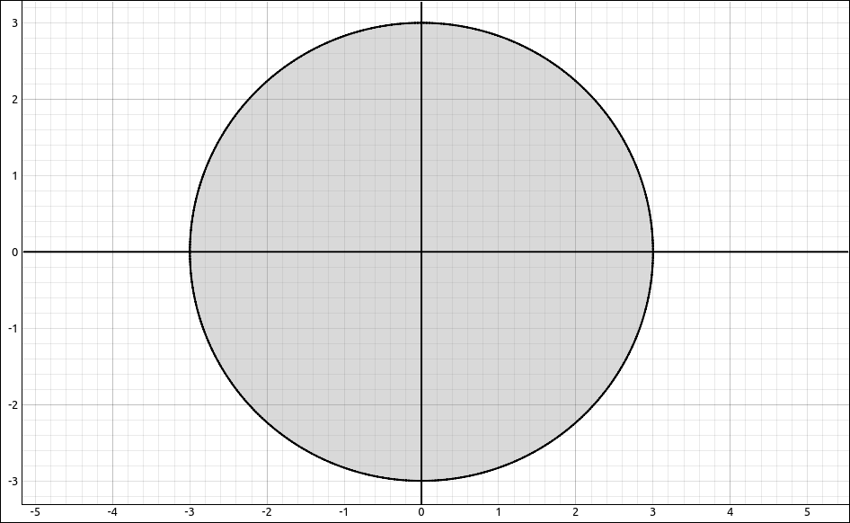
Polar Coordinate Rectangle#
As another example, the region below is \(D = \{ (r, \theta) \; | \; 1 \leq r \leq 3, 0 \leq \theta \leq \pi \}.\)
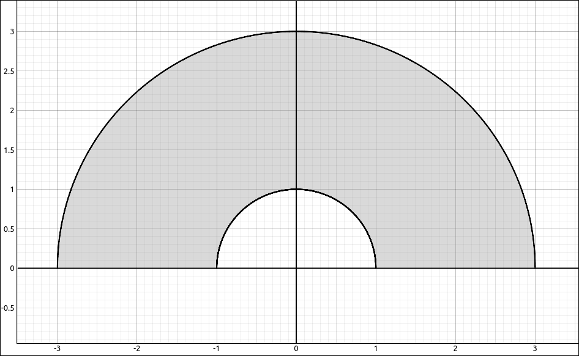
Polar Coordinate Rectangle#
So the upshot of this is that if you are doing a double integral over a region that is circular or a portion of a washer then converting the coordinates to polar coordinates may take a difficult integral and turn it into an integral over a rectangular region, or at least make it an easier integral.
Double Integrals in Polar Coordinates#
We wish to convert the integral,
into one with variables \(r\) and \(\theta\) in polar coordinates. We can use the formulas \(x = r \cos(\theta)\) and \(y = r \sin(\theta)\) for x and y and we can rewrite the region D in polar coordinates as we did in the examples above. The big question is what happens to \(dA?\) As usual, we take our polar rectangle, which is a sector of a circle, looks like a truncated piece of a pie, divide it up into smaller sectors by dividing it along the radius and angle. So in the picture below we denote \(R_{ij}\) as the \(ij\) subregion between the radius divisions \(r_{i-1}\) and \(r_{i}\) and the angle divisions \(\theta_{j-1}\) and \(\theta_{j}.\)
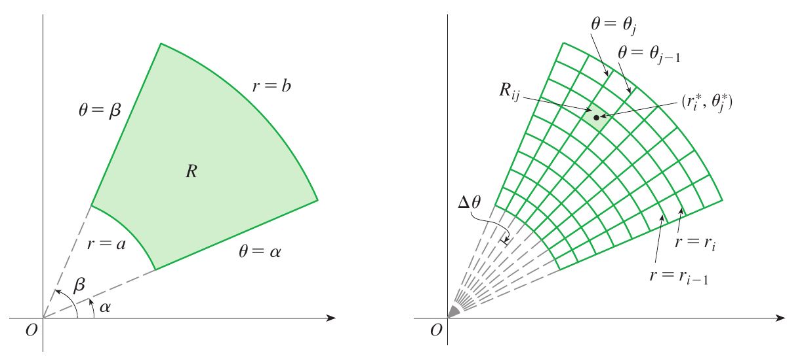
Polar Coordinate Rectangle#
Now we need to find the area of \(R_{ij}.\) Let \(\Delta \theta = \theta_j - \theta_{j-1},\) then the area of \(R_{ij}\) is
where \(r_i^*\) is the midpoint between \(r_{i-1}\) and \(r_{i}.\) When we take the limit as \(\Delta r\) and \(\Delta \theta\) approach 0, \(\Delta r \to dr\), \(\Delta \theta \to d\theta\), \(r_i^* \to r\), and \(\Delta A_i \to dA.\) Putting this all together we have \(dA = r \; dr \; d\theta.\) So when we change coordinates to polar coordinates our integral changes as follows, just do not forget the “extra” \(r.\)
Theorem: Double Integrals in Polar Coordinates
If a function \(f(x, y)\) is continuous on a polar region \(R = \{ (r, \theta) \; | \; a \leq r \leq b, \alpha \leq \theta \leq \beta \}\) where \(0 \leq \beta - \alpha \leq 2\pi,\) then
Example: \(\iint_R 1-x^2-y^2 \; dA\) where R is the Unit Disk#
GeoGebra#
Again we will get a picture of the volume we are calculating. Input the function,
-x^2 - y^2 + 1
Also input the unit disk,
x^2 + y^2 <= 1
Finally input the a, b to restrict the surface to the domain, you should see,
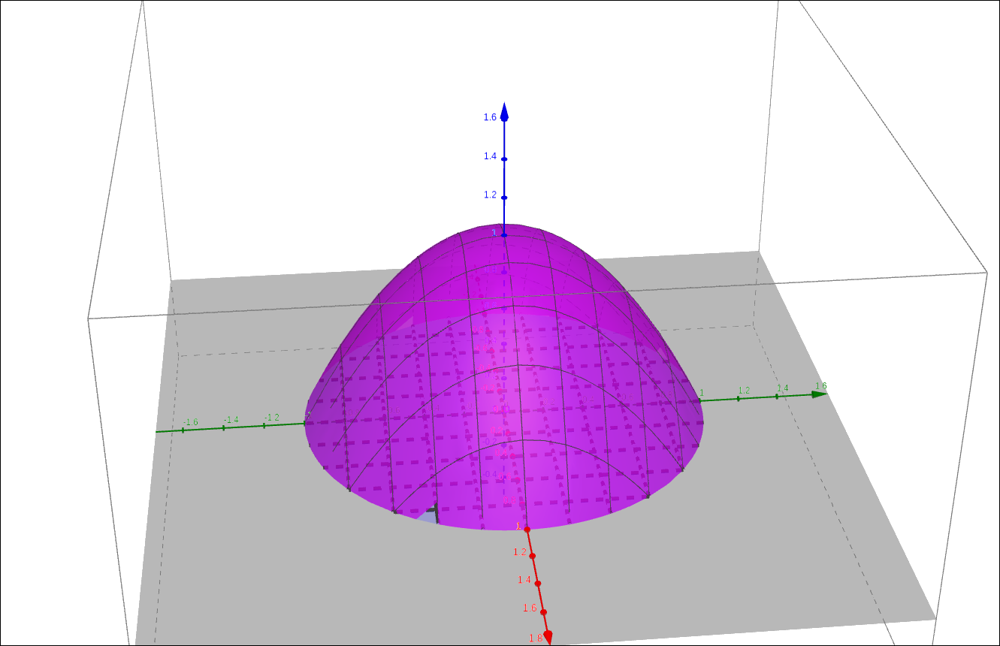
\(z = -x^2 - y^2 + 1\) on the Unit Disk#
CLAE#
In CLAE we will get a look at the region and go through the calculations. Input the function,
-x^2 - y^2 + 1
Also input the boundary to the unit disk, first making it an equation with 0, as usual.
x^2 + y^2 - 1
Click and drag both of these over to the 3D graphics window. They will both come in as functions, for the boundary equation, change the type to Implicit Relationship, go into its properties and change the plot from Surface to Grid. You should see the following, note that we did zoom in a bit.
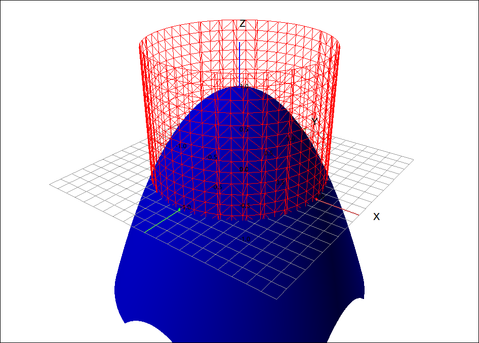
\(z = -x^2 - y^2 + 1\) on the Unit Disk#
So the integral will be the volume under the surface and within the cylinder. Now for the calculations, in rectangular coordinates we would have the integral,
When we convert to polar coordinates we get,
The second one is trivial to do by hand but we can also do it on the machine, input r-r^3 into that CAS then select Calculus > Multiple Integrals > Double Integral, the first variable is r with bounds 0 and 1, the second variable is t with bounds 0 and 2*pi. The result is, \(\frac{\pi}{2}.\)
We can do the same integral in rectangular coordinates,
Here we select the original formula for the surface, then select Calculus > Multiple Integrals > Double Integral, the first variable is y with bounds -sqrt(1-x^2) and sqrt(1-x^2), the second variable is x with bounds -1 and 1. The result is also, \(\frac{\pi}{2}.\)
One of the downsides to using technology is that you do not tend to see the computational savings when you use them as opposed to doing the work by hand. We do not know if CLAE converted the above integral to polar before calculating it or if it attacked it with rectangular coordinates (which is really what it did). To get a feel for this if we do the first (inside) integral in CLAE, we get,
As part of the next integral we need to find the indefinite integral of this result before we evaluate it at the bounds, the indefinite integral of this is,
Far more difficult than a polynomial on a rectangle.
Maxima#
In Maxima, the polar integral would be,
integrate(integrate(-r**3 + r, r, 0, 1), t, 0, 2*%pi);
and the rectangular coordinate integral is,
integrate(integrate(-x**2 - y**2 + 1, y, -sqrt(1 - x**2), sqrt(1 - x**2)), x, -1, 1);
They both return the result of, \(\frac{\pi}{2}.\)
Example: \(\iint_R x + y \; dA\) where R is an Annular Region#
In this example we will calculate \(\iint_R x + y \; dA\) where R is the region bounded by the circles \(x^2+y^2 = 1\) and \(x^2+y^2 = 4\) to the left of the y-axis.
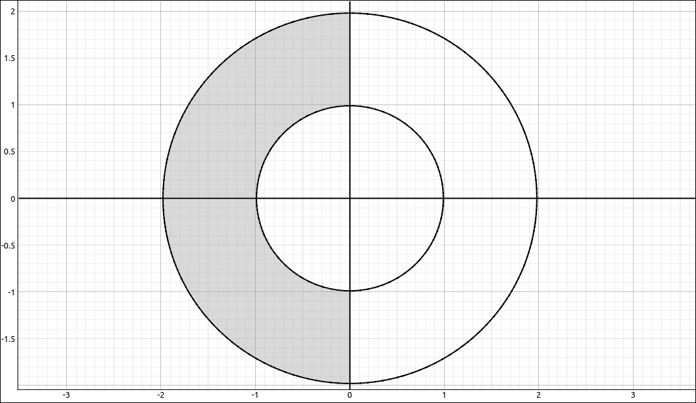
Polar Region#
In polar coordinates this is the rectangle, \(R = \{ (r, \theta) \; | \; 1 \leq r \leq 2, \frac{\pi}{2} \leq \theta \leq \frac{3\pi}{2} \}.\) So our integral is,
CLAE#
In CLAE we can get an image of the volume we are calculating in a similar manner as we did above. Input the function,
x + y
Input the bounding curves, set to 0,
x^2 + y^2 - 1
and
x^2 + y^2 - 4
Click and drag all of these to the 3D graphics window. Set the type for the boundary curves to Implicit Relationship and change the plot to the grid.
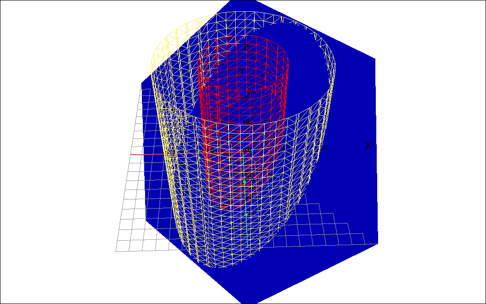
Surface and Bounds#
Now we will do the calculations, first we convert the integral to polar coordinates. This is easy enough to just do but the following might help ease the typing for larger and more complex integrands, select the function, then select Algebra > Evaluate, the variable list should be [x, y], leave this as is, for the expressions input [r*cos(t), r*sin(t)] and hit OK. Say this results in the expression R4, now input r * R4 into the CAS. The result should be,
and now we are ready to integrate. Note that the above method will work for any integrand we are converting to polar coordinates. Select the above function, then select Calculus > Multiple Integrals > Double Integral, the first variable is r with bounds 1 and 2, and the second integral is t with bounds pi/2 and 3*pi/2. The result is \(-14/3\), as expected.
Note that this region is neither Type I nor Type II, so if we had attacked this with rectangular coordinates we would need to divide up the region and do multiple integrals.
General Polar Regions of Integration#
If our region is not a polar rectangle we can still integrate over the region just like we did in rectangular coordinates. In rectangular coordinates we discussed Type I nd Type II regions, the same can be done here but for polar coordinate functions they are usually in the form \(r = f(\theta)\) so we will restrict ourselves to that case. The general region would loo like the following,
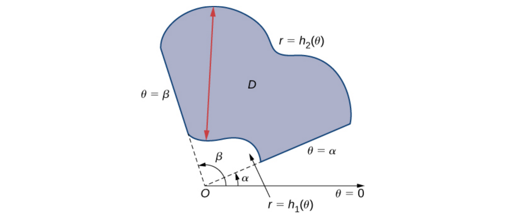
General Polar Region#
These can be calculated in a similar manner as in rectangular coordinates.
Theorem: Double Integrals over General Polar Coordinate Regions
If a function \(f(x, y)\) is continuous on a polar region \(R = \{ (r, \theta) \; | \; h_1(\theta) \leq r \leq h_2(\theta), \alpha \leq \theta \leq \beta \}\) where \(0 \leq \beta - \alpha \leq 2\pi,\) then
Example: The Area in One Loop of \(r = \cos(2\theta)\)#
The goal of this example is to find the area of one loop of the polar function, \(r = \cos(2\theta).\)
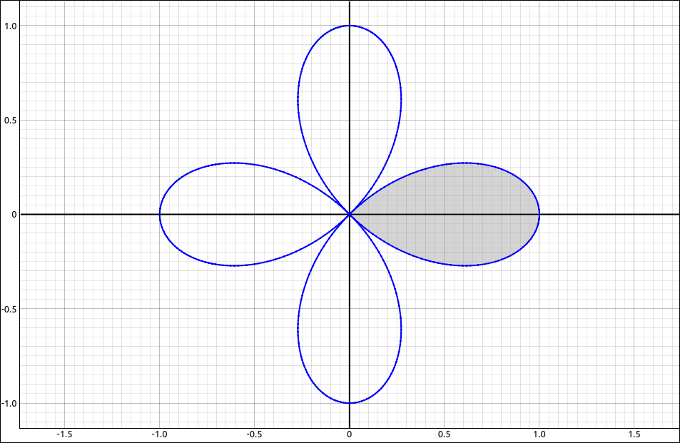
\(r = \cos(2\theta)\)#
CLAE#
In general, we can find the area of a region R with the double integral,
Looking at the region the r bounds would be 0 and \(\cos(2\theta)\), the question is what the bounds for \(\theta\) should be. One loop of this function would be two consecutive places where \(\cos(2\theta)\) is 0. That is, two consecutive places where the radius is 0 and the graph ends up back at the origin. If we select the function and then select Algebra > Solve the result is \(\left[ \frac{\pi}{4}, \ \frac{3 \pi}{4}\right].\) Note that we can use these bounds but that is not what we have in the shaded region above. If we restruct the above graph to this interval we get,
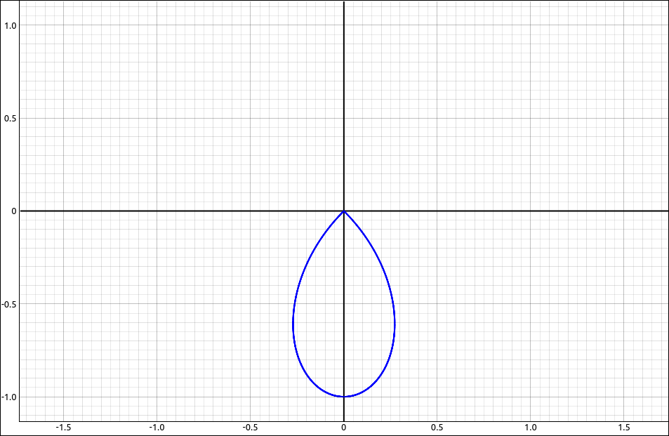
\(r = \cos(2\theta)\)#
This is still one loop but what we have shaded is \(\left[ -\frac{\pi}{4}, \ \frac{\pi}{4}\right].\) If we used one of the advanced solvers in the algebra menu we would get a more detailed solution,
and of course our interval matches this. So our integral is,
To do the integral, input r into thee CAS. Select Calculus > Multiple Integrals > Double Integral, the first variable is r with bounds 0 and cos(2*t), and the second integral is t with bounds -pi/4 and pi/4. The result is \(\pi/8.\)